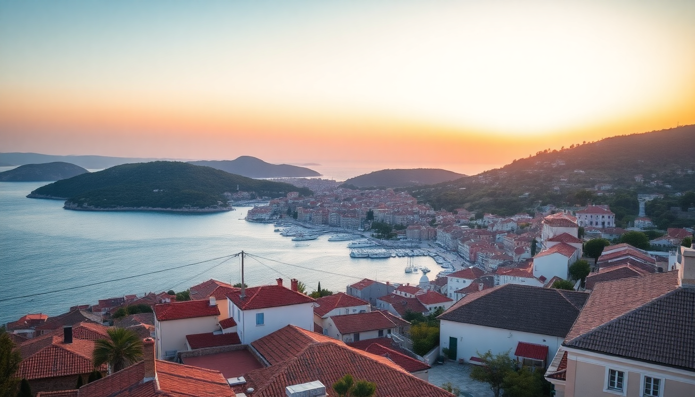

Where to Stay in Hvar: Best Neighborhoods for Every Budget

I’ve been to Hvar three times now—once on a backpacker’s shoestring, once for a friend’s wedding, and once just to hide from a busy summer. Every trip taught me something different about where to lay your head. Hvar isn’t one town; it’s a collection of bays, old stone hamlets, and one very buzzy harbor. Your budget and your tolerance for club music will decide your base. Here’s what I learned, neighborhood by neighborhood.
Is Hvar Town Worth the Price Tag?
Hvar Town is the postcard—the palm-lined piazza, the fortress looming above, the yachts bobbing at anchor. It’s also the most expensive place to sleep on the island. I stayed at Hotel Park Hvar one summer and loved the infinity pool overlooking the Pakleni Islands, but I paid for it. If you want to be steps from the nightlife at Carpe Diem Beach or the ferry terminal, you’ll pay a premium for a room with a sea view.
- Budget tip: Skip the harbor-front hotels. Walk ten minutes up into the alleys behind St. Stephen’s Cathedral and you’ll find family-run sobe (private rooms) for half the price. I booked a spot through Booking.com called Apartments Villa Skansi—basic but clean, with a terrace that caught the morning sun.
- Splurge: Hotel Adriana sits right on the Riva. The spa is excellent, but the real draw is the rooftop bar with views across to the Pakleni Islands.
- Downside: Noise. From June to August, the bars on the harbor keep going until 3 AM. If you’re a light sleeper, don’t stay on the ground floor near the main square.
Where Should Budget Travelers Stay in Hvar?
For under €80 a night in peak season, you’re not getting a hotel in Hvar Town. You’re getting a room in a private apartment in Stari Grad or Jelsa, and honestly, that’s a better deal. Stari Grad is the oldest town on the island—think Roman grid streets and a quiet harbor. I stayed at Hotel Antika in Stari Grad, a small three-star right on the main square. The rooms are dated, but the location is unbeatable, and the breakfast spread includes local prosciutto and cheese.
- Best cheap eat in Stari Grad: Konoba Kokot for grilled fish under a grapevine. No reservations, cash only, and you’ll queue.
- Jelsa option: Camping Vira is a well-run campsite right on the pebble beach. They rent small mobile homes if you don’t have a tent.
- Transport: The bus from Stari Grad to Hvar Town runs hourly and takes 20 minutes. Costs about €3. I used an eSIM from Airalo to check timetables on the go—saved me a few missed buses.
Is Stari Grad Too Quiet for Nightlife?
Yes, if you want clubs. No, if you want a proper dinner and a glass of wine without a DJ. Stari Grad has a handful of bars—Bar Bizzar is a wine bar with a small terrace overlooking the marina—but the music stops by midnight. I actually prefer it this way. After a day hiking up to Fortica Fortress or swimming at Mlini Beach, I’d rather eat late at Konoba Bonaca (try the octopus under a bell) and walk back to my room without dodging drunk tourists.
- The trade-off: You save money and get peace. You lose the convenience of stumbling from dinner to a club.
- Pro tip: If you want one night of partying without staying in Hvar Town, take the last bus into town (around 11 PM) and the first bus back at 6 AM. I did this twice. It works.
What About the Beaches—Should I Stay Near One?
Hvar’s best swimming spots aren’t in the main town. Dubovica Beach is a pebble cove with a 17th-century stone house backdrop—iconic, but crowded by 10 AM. Mlini Beach near Stari Grad is quieter and has a small bar. Pokonji Dol is the closest beach to Hvar Town, a ten-minute walk east of the harbor.
- Best beach for a day trip: Rent a scooter from Miki Rent in Hvar Town (about €40/day) and ride to Ivan Dolac. It’s a long, pebbly beach with clear water and a few konobas serving grilled sardines and cold beer.
- Where to stay for beach access: Hotel Desaret in Jelsa has a small private beach area and a pier. The rooms are nothing fancy, but you can jump straight into the sea from the hotel steps.
- Warning: Don’t stay at Amfora Hvar Grand Beach Resort unless you want a resort experience. It’s huge, loud, and feels disconnected from the island’s character.
Is It Better to Stay in a Village Like Vrboska?
Vrboska is often called “Little Venice” because of the stone bridges crossing a narrow canal. It’s tiny—maybe 500 residents—and dead quiet after dinner. I spent three nights at Hotel Adriana (the one in Vrboska, not Hvar Town) and loved it. The hotel has a small pool, a decent restaurant, and a dock where you can swim. It’s not a base for nightlife, but it’s perfect for couples who want to read books and drink local Plavac Mali wine.
- Best for: Families with young kids, couples avoiding crowds, anyone who wants a rental car.
- Best meal: Konoba Pjaca serves a lamb peka that you have to order 24 hours ahead. Worth the planning.
- Reality check: You need a car or a taxi to get anywhere. The bus from Vrboska to Hvar Town takes 40 minutes and runs only a few times a day.
What’s the Best Neighborhood for a Day Trip to the Pakleni Islands?
The Pakleni Islands are a short water-taxi ride from Hvar Town. If you want to spend your days hopping between beach bars like Carpe Diem Beach on Stipanska or the nudist-friendly Jerolim, stay in Hvar Town. The water taxis leave from the harbor every 15 minutes in summer and cost about €10 round-trip.
- Pro tip: Stay at Hotel Podstine in Hvar Town. It’s a 15-minute walk from the center, perched above a small pebble beach. The hotel has its own dock and runs a free shuttle boat to the Pakleni Islands. I used this three days in a row.
- Budget option: Pack a picnic and take the public ferry from Hvar Town to Palmižana on Sveti Klement. There’s a restaurant there, but it’s expensive. Bring your own supplies from Sammy’s Market in Hvar Town.
FAQ
How many days should I spend in Hvar? Three to four days is enough to see the main town, swim at a couple beaches, and take a day trip to the Pakleni Islands. If you want to hike the island’s interior or visit the lavender fields near Velo Grablje, add two more days. I’d skip any trip shorter than two nights—you’ll spend half your time checking in and out.
Do I need a car on Hvar? No, but it helps. The bus system connects Hvar Town, Stari Grad, Jelsa, and Vrboska reliably during summer. For exploring coves and inland villages, a scooter or rental car from Miki Rent gives you freedom. I rented a car for two days and hit Mlini Beach, Dubovica, and the Fortica Fortress without waiting for buses.
Is Hvar safe for solo travelers? Yes. I traveled solo my first time and never felt unsafe. The main risks are pickpocketing on crowded ferries and drunk tourists near the clubs. Stay in a well-rated hostel like Hostel Marinero in Stari Grad if you want to meet people, or book a private room in a family-run apartment. Keep your valuables in the safe.
Conclusion
- Hvar Town is for party people and splurgers—stay at Hotel Adriana or Hotel Podstine if you can afford it, or find a private room in the back alleys.
- Stari Grad and Jelsa are the sweet spots for mid-range budgets—quiet, cheaper, and a short bus ride from the action.
- Vrboska is for peace seekers who don’t mind renting a car.
- Book accommodation early. Hvar fills up by May, and prices double in July and August.
- Pack a swimsuit and a good pair of sandals. You’ll be walking on pebbles and stone streets every day.